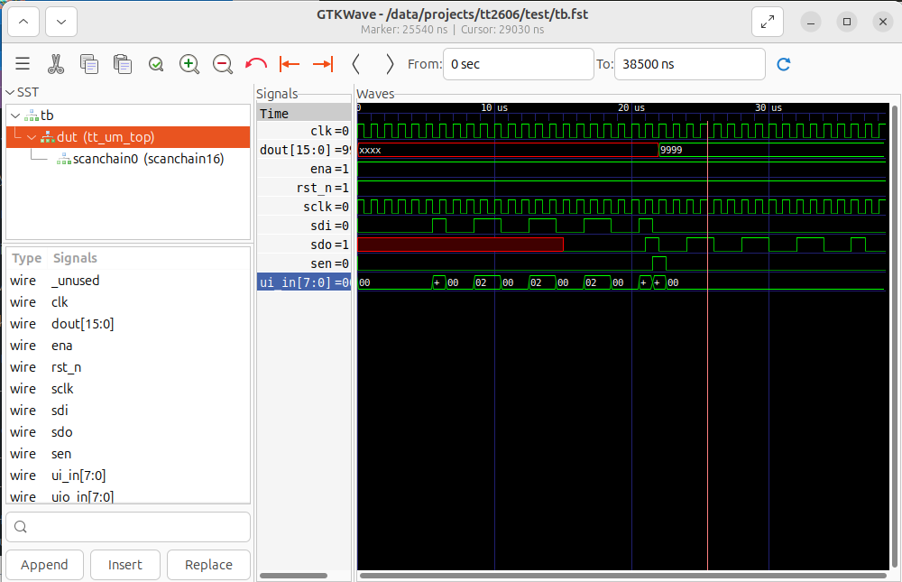
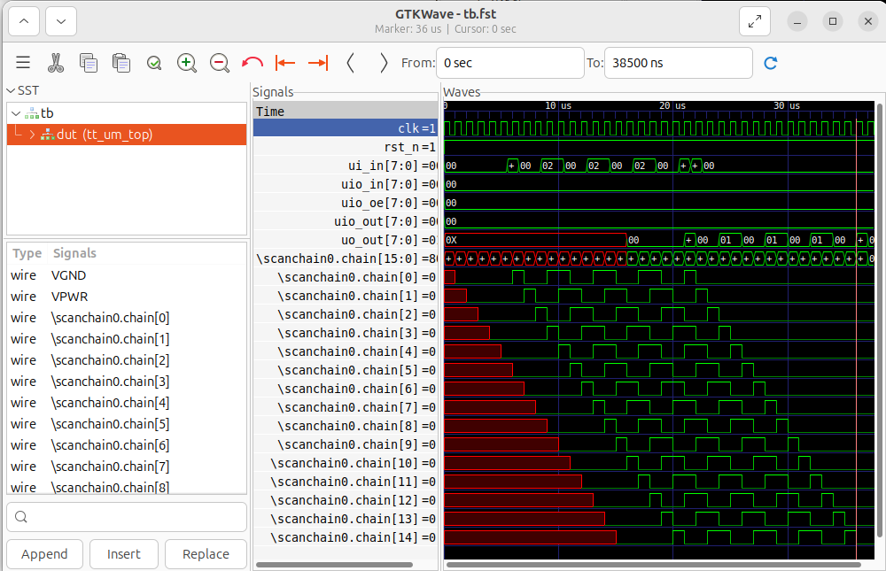
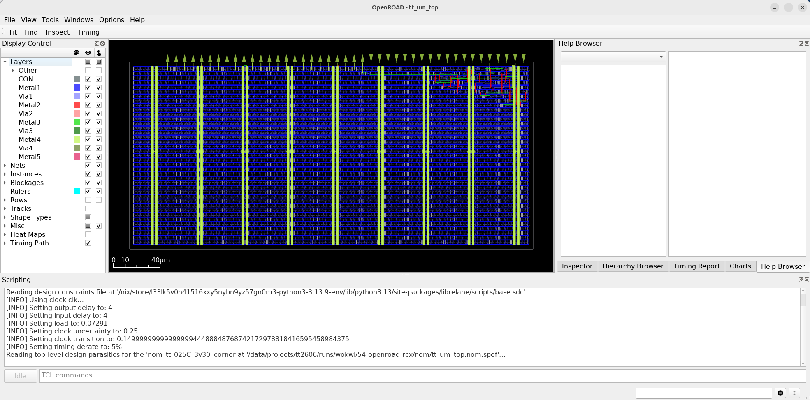
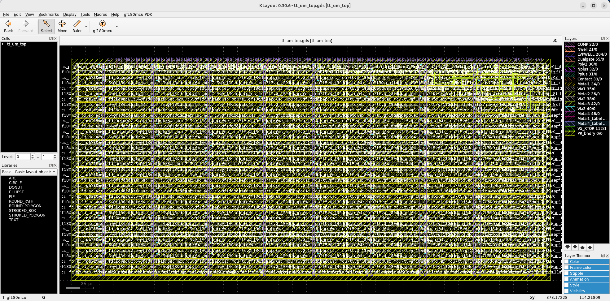

Working with Tiny Tapeout
1. Introduction
Tiny Tapeout is a service that allows you to buy small tiles within a pre-built framework to fabricate a custom chip with your design at a very low cost. For this purpose, it uses OpenPDKs from SkyWaters, GlobalFoundries, and IHP through ChipIgnite, Wafer.Space, and IHP, resepctively.
To get started, follow the instructions in this link to create an HDL project. Watch the YouTube video, it is very helpful. We will use the provided GF template in this tutorial. Templates for other technologies are available at Tiny Tapeout.
2. The Tiny Tapeout Interface
Tiny Tapeout interfaces with your project using the custom interface shown in the table and code below. Code copied from https://github.com/TinyTapeout/ttihp-verilog-template/blob/main/src/project.v.
2.1. Interface Table & Code
| User Pads | Tiny Tapeout Framework | Your Design |
|---|---|---|
| rst_n | rst_n | rst_n |
| clk | clk | clk |
| ena | ena | |
| ui_pad[7:0] | ui_in[7:0] | ui_in[7:0] |
| uo_pad[7:0] | uo_out[7:0] | uo_out[7:0] |
| uio_pad[7:0] | uio_in[7:0] | uio_in[7:0] |
| uio_out[7:0] | uio_out[7:0] | |
| uio_oe[7:0] | uio_oe[7:0] |
2.2. Interface Diagram
flowchart LR
s0_p0["rest_n"]
s0_p1["clk"]
s0_p3["ui_pad[7:0]"]
s0_p4["uo_pad[7:0]"]
s0_p5["uio_pad[7:0]"]
subgraph s1["`**Tiny Tapout Framework**`"]
subgraph s10["Pads"]
s1_p0[" "]
s1_p1[" "]
s1_p3[" "]
s1_p4[" "]
s1_p5[" "]
style s1_p0 width:30,x:-15
style s1_p1 width:30,x:-15
style s1_p3 width:30,x:-15
style s1_p4 width:30,x:-15
style s1_p5 width:30,x:-15
end
subgraph s11["Signals"]
s1_p10["rest_n"]
s1_p11["clk"]
s1_p12["ena"]
s1_p13["ui_in[7:0]"]
s1_p14["uo_out[7:0]"]
s1_p15["uio_in[7:0]"]
s1_p16["uio_out[7:0]"]
s1_p17["uio_oe[7:0]"]
end
s1_p0 --- s1_p10
s1_p1 --- s1_p11
s1_p3 --- s1_p13
s1_p4 --- s1_p14
s1_p5 --- s1_p15
s1_p5 --- s1_p16
end
subgraph s2["`**Your Design**`"]
s2_p0["rest_n"]
s2_p1["clk"]
s2_p2["ena"]
s2_p3["ui_in[7:0]"]
s2_p4["uo_out[7:0]"]
s2_p5["uio_in[7:0]"]
s2_p6["uio_out[7:0]"]
s2_p7["uio_oe[7:0]"]
end
s0_p0 --> s1_p0
s0_p1 --> s1_p1
s0_p3 --> s1_p3
s0_p4 ~~~ s1_p4 --> s0_p4
s1_p4 ~~~ s0_p4
s0_p5 <--> s1_p5
s1_p10 --> s2_p0
s1_p11 --> s2_p1
s1_p12 --> s2_p2
s1_p13 --> s2_p3
s1_p14 ~~~ s2_p4 --> s1_p14
s2_p4 ~~~ s1_p14
s1_p15 --> s2_p5
s1_p16 ~~~ s2_p6 --> s1_p16
s2_p6 ~~~ s1_p16
s1_p17 ~~~ s2_p7 --> s1_p17
s2_p7 ~~~ s1_p17
3. Example Project
3.1. Repository
We have cloned the template repository github.com/manuel-monge/tt2606. You can create your own repository by going to the template repository, pressing the Use this template button, and creating a new repository in your GitHub account. Make the repository Public.
Enable GitHub Actions by following the instructions in the README.md file in the repository.
3.2. Design Files
We will use the design below in this tutorial. Add this Verilog file under src and fill the metadata in the info.yaml.
/*******************************************************************
Autor: Manuel Monge
Description:
Top-level file for a Tiny Tapeout Project.
Copyright (c) 2026 Manuel Monge
SPDX-License-Identifier: Apache-2.0
*******************************************************************/
`default_nettype none
module tt_top (
input wire [7:0] ui_in, // Dedicated inputs
output wire [7:0] uo_out, // Dedicated outputs
input wire [7:0] uio_in, // IOs: Input path
output wire [7:0] uio_out, // IOs: Output path
output wire [7:0] uio_oe, // IOs: Enable path (active high: 0=input, 1=output)
input wire ena, // always 1 when the design is powered, so you can ignore it
input wire clk, // clock
input wire rst_n // reset_n - low to reset
);
// *****************************************************************
// BEGIN: Description of your design
// *****************************************************************
//inputs
wire sclk,sen,sdi;
//outputs
wire sdo;
wire [15:0] dout;
scanchain16 #(.n(16)) scanchain0 (
.sclk (sclk),
.sen (sen),
.sdi (sdi),
.sdo (sdo),
.dout (dout)
);
// Pin Mapping
assign sclk = clk;
assign sen = ui_in[0];
assign sdi = ui_in[1];
assign uo_out[0] = sdo;
// *****************************************************************
// END: Description of your design
// *****************************************************************
// *****************************************************************
// BEGIN: Unused inputs and outputs
// *****************************************************************
// All output pins must be assigned. If not used, assign to 0.
assign uo_out[7:1] = 0;
assign uio_out = 0;
assign uio_oe = 0;
// List all unused inputs to prevent warnings
wire _unused = &{ena, rst_n, ui_in[7:2], uio_in, 1'b0};
// *****************************************************************
// END: Unused inputs and outputs
// *****************************************************************
endmodule
/*******************************************************************
Autor: Manuel Monge
Description:
Generic Scan Chain (Shift Register and 'valid' register).
Inputs:
sclk: Scan clock
sen: enables the parallel load to the second parallel register
sdi: Scan chain input (MSB First)
Outputs:
sdo: Scan chain output
dout: Parallel data out
*******************************************************************/
module scanchain16(sclk,sen,sdi,sdo,dout);
parameter n=16;//number of bits of the scan chain
//inputs
input sclk,sen,sdi;
//outputs
output sdo;
output [n-1:0] dout;
reg [n-1:0] chain,dout;
//shift register
always@(posedge sclk)
chain<={chain[n-2:0],sdi};
//Scan chain output
assign sdo=chain[n-1];
//Load bits to parallel output
always@(posedge sclk)
if(sen)
dout<=chain;
endmodule
# Tiny Tapeout project information
project:
title: "RHD2164-MCU-SPI Bridge" # Project title
author: "Manuel Monge" # Your name
discord: "manuelmonge85" # Your discord username, for communication and automatically assigning you a Tapeout role (optional)
description: "Various SPIs" # One line description of what your project does
language: "Verilog" # other examples include SystemVerilog, Amaranth, VHDL, etc
clock_hz: 50000000 # Clock frequency in Hz (or 0 if not applicable)
# How many tiles your design occupies? A single tile is about 340x160 uM.
tiles: "1x1" # Valid values: 1x1, 1x2, 2x2, 3x2, 4x2, 3x4 or 4x4
# Your top module name must start with "tt_um_". Make it unique by including your github username:
top_module: "tt_um_top"
# List your project's source files here.
# Source files must be in ./src and you must list each source file separately, one per line.
# Don't forget to also update `PROJECT_SOURCES` in test/Makefile.
source_files:
- "tt_um_top.v"
# The pinout of your project. Leave unused pins blank. DO NOT delete or add any pins.
# This section is for the datasheet/website. Use descriptive names (e.g., RX, TX, MOSI, SCL, SEG_A, etc.).
pinout:
# Inputs
ui[0]: "sen"
ui[1]: "sdi"
ui[2]: ""
ui[3]: ""
ui[4]: ""
ui[5]: ""
ui[6]: ""
ui[7]: ""
# Outputs
uo[0]: "sdo"
uo[1]: ""
uo[2]: ""
uo[3]: ""
uo[4]: ""
uo[5]: ""
uo[6]: ""
uo[7]: ""
# Bidirectional pins
uio[0]: ""
uio[1]: ""
uio[2]: ""
uio[3]: ""
uio[4]: ""
uio[5]: ""
uio[6]: ""
uio[7]: ""
# Do not change!
yaml_version: 6
3.3. Simulation/Testing Files
Tiny Tapeout uses cocotb for testing. Cocotb allows you to use Python to write your testbench and run your simulations.
Add the testbench file shown below under test. Notice how your design is instantiated as dut (device-under-test). Code taken from https://github.com/TinyTapeout/ttihp-verilog-template/blob/main/test/tb.v.
`default_nettype none
`timescale 1ns / 1ps
/* This testbench just instantiates the module and makes some convenient wires
that can be driven / tested by the cocotb test.py.
*/
module tb ();
// Dump the signals to a FST file. You can view it with gtkwave or surfer.
initial begin
$dumpfile("tb.fst");
$dumpvars(0, tb);
#1;
end
// Wire up the inputs and outputs:
reg clk;
reg rst_n;
reg ena;
reg [7:0] ui_in;
reg [7:0] uio_in;
wire [7:0] uo_out;
wire [7:0] uio_out;
wire [7:0] uio_oe;
`ifdef GL_TEST
wire VPWR = 1'b1;
wire VGND = 1'b0;
`endif
// Replace tt_um_example with your module name:
tt_um_top dut (
// Include power ports for the Gate Level test:
`ifdef GL_TEST
.VPWR(VPWR),
.VGND(VGND),
`endif
.ui_in (ui_in), // Dedicated inputs
.uo_out (uo_out), // Dedicated outputs
.uio_in (uio_in), // IOs: Input path
.uio_out(uio_out), // IOs: Output path
.uio_oe (uio_oe), // IOs: Enable path (active high: 0=input, 1=output)
.ena (ena), // enable - goes high when design is selected
.clk (clk), // clock
.rst_n (rst_n) // not reset
);
endmodule
3.4. Documentation
Add some documentation about your project in info.md under docs. For example:
## How it works
This design implements a simple scanchain.
## How to test
Connect the chip to an FPGA/MCU. Send data in and check the desired change happened.
## External hardware
* FPGA or MCU
4. Setting Up Local Tools
We will use the following guide Local Hardening to install the required tools to run hardening locally.
4.1. Requirements
Install (or verify) that you have the following tools.
Python 3.11or newer. I am currently usingPthon 3.12.3.
- Updated version of
Docker. I am currently usingDocker 29.5.0.
- Clone Tiny Tapeout supported tools as specified in the guide above.
4.2. Python Environment and Dependencies
Note
We have used Python versions 3.11 and 3.12.3 successfully. Version 3.14 didn't work.
Create a virtual environment for Tiny Tapeout tool repository, activate it, and install dependencies.
$ mkdir ~/setups/ttsetup
$ python3 -m venv ~/setups/ttsetup/venv
$ source ~/setups/ttsetup/venv/bin/activate
$ cd [your-project-directory]/tt2606/tt
$ pip install -r requirements.txt
4.3. Set Up Environment Variables
Set up PDK_ROOT, PDK, and LIBRELANE_TAG.
Then, source it with:
4.4. Install LibreLane
Install LibreLane as shown in the TT guide.
4.5. Install Verilog simulation tools
We will install iverilog, verilator, GTKWave, cocotb, and pytest.
5. Simulating Your Project
We will use the following guides: Local Hardening and Testing Your Design from tiny Tapeout.
5.1. Set up your simulation
Add your verilog files to the Makefile by updating the list PROJECT_SOURCES with, for example:
For this tutorial, it is only one file.
We will run our testbench using cocotb. Create/open test.py.
import cocotb
from cocotb.clock import Clock
from cocotb.triggers import ClockCycles, Timer
# Function to set a specific bit in an array of bits (like ui_in)
def set_bit_in_array(array, index, bit_value):
# bit_value should be 0 or 1
aux = array.value
aux[index] = bit_value
array.value = aux
# Test to verify the behavior of the project
@cocotb.test()
async def test_project(dut):
dut._log.info("Start")
# Set the clock period to 1 us (1 MHz)
clkperiod = 1 # in us
clock = Clock(dut.clk, clkperiod, unit="us")
cocotb.start_soon(clock.start())
# Reset
dut._log.info("Reset")
dut.ena.value = 1
dut.ui_in.value = 0
dut.uio_in.value = 0
dut.rst_n.value = 0
await ClockCycles(dut.clk, 1)
dut.rst_n.value = 1
await ClockCycles(dut.clk, 5)
await Timer(0.5*clkperiod, unit="us") # half clock cycle
dut._log.info("Test project behavior")
# Set the scanchain inputs for 0x1001100110011001
din_value = "1001100110011001"
dut._log.info("din_value: %s", din_value)
# Shift in the input values bit by bit into the scanchain using SDI and SEN signals.
dut._log.info("Shift in the data into the scanchain")
set_bit_in_array(dut.ui_in, 1, 1) # SDI = 1
await Timer(1*clkperiod, unit="us")
set_bit_in_array(dut.ui_in, 1, 0) # SDI = 0
await Timer(1*clkperiod, unit="us")
set_bit_in_array(dut.ui_in, 1, 0) # SDI = 0
await Timer(1*clkperiod, unit="us")
set_bit_in_array(dut.ui_in, 1, 1) # SDI = 1
await Timer(1*clkperiod, unit="us")
set_bit_in_array(dut.ui_in, 1, 1) # SDI = 1
await Timer(1*clkperiod, unit="us")
set_bit_in_array(dut.ui_in, 1, 0) # SDI = 0
await Timer(1*clkperiod, unit="us")
set_bit_in_array(dut.ui_in, 1, 0) # SDI = 0
await Timer(1*clkperiod, unit="us")
set_bit_in_array(dut.ui_in, 1, 1) # SDI = 1
await Timer(1*clkperiod, unit="us")
set_bit_in_array(dut.ui_in, 1, 1) # SDI = 1
await Timer(1*clkperiod, unit="us")
set_bit_in_array(dut.ui_in, 1, 0) # SDI = 0
await Timer(1*clkperiod, unit="us")
set_bit_in_array(dut.ui_in, 1, 0) # SDI = 0
await Timer(1*clkperiod, unit="us")
set_bit_in_array(dut.ui_in, 1, 1) # SDI = 1
await Timer(1*clkperiod, unit="us")
set_bit_in_array(dut.ui_in, 1, 1) # SDI = 1
await Timer(1*clkperiod, unit="us")
set_bit_in_array(dut.ui_in, 1, 0) # SDI = 0
await Timer(1*clkperiod, unit="us")
set_bit_in_array(dut.ui_in, 1, 0) # SDI = 0
await Timer(1*clkperiod, unit="us")
set_bit_in_array(dut.ui_in, 1, 1) # SDI = 1
await Timer(1*clkperiod, unit="us")
dut.ui_in.value = "00000001" # SDI = 0; SEN = 1
await Timer(1*clkperiod, unit="us")
set_bit_in_array(dut.ui_in, 0, 0) # SEN = 0
obj = getattr(dut.dut, 'dout', None) # Check for dut-internal variable "dout" (which is the case for RTL simulation but not for GL simulation)
if obj == None:
sim_is_rtl = 0
dut._log.info("GL simulation detected")
else:
sim_is_rtl = 1
dut._log.info("RTL simulation detected")
if sim_is_rtl:
# Assert if the parallel output of the scanchain is correct after shifting in the input values.
dout_value = str(dut.dut.dout.value) # Get the dut.sdo value in binary string format
dut._log.info("dout_value: %s", dout_value)
assert dout_value == din_value # Check if the parallel output matches the input value.
# continue with test by scanning out all bits
await Timer(16*clkperiod, unit="us")
# Verify the last value of SDO after scanning out all bits is Zero.
aux = str(dut.uo_out.value) # Get the output value in binary string format
sdo_last = int(aux[0]) # Get the last value of SDO
dut._log.info("sdo_last: %d", sdo_last)
assert sdo_last == 0 # Check if the last value of SDO is 0.
5.2. Running the RTL simulation
To run the RTL simulation, execute:
You should see in your terminal an output similar to this.
$ make -B
rm -f results.xml
"make" -f Makefile results.xml
make[1]: Entering directory '/data/projects/tt2606/test'
mkdir -p sim_build/rtl
/usr/bin/iverilog -o sim_build/rtl/sim.vvp -s tb -g2012 -I/data/projects/tt2606/test/../src -f sim_build/rtl/cmds.f /data/projects/tt2606/test/../src/tt_um_top.v /data/projects/tt2606/test/tb.v
rm -f results.xml
COCOTB_TEST_MODULES=test COCOTB_TESTCASE= COCOTB_TEST_FILTER= COCOTB_TOPLEVEL=tb TOPLEVEL_LANG=verilog \
/usr/bin/vvp -M /home/manuel/setups/ttsetup/venv/lib/python3.12/site-packages/cocotb/libs -m libcocotbvpi_icarus sim_build/rtl/sim.vvp -fst
-.--ns INFO gpi ..mbed/gpi_embed.cpp:93 in _embed_init_python Using Python 3.12.4 interpreter at /home/manuel/setups/ttsetup/venv/bin/python3
-.--ns INFO gpi ../gpi/GpiCommon.cpp:79 in gpi_print_registered_impl VPI registered
0.00ns INFO cocotb Running on Icarus Verilog version 12.0 (stable)
0.00ns INFO cocotb Seeding Python random module with 1779493212
0.00ns INFO cocotb Initialized cocotb v2.0.1 from /home/manuel/setups/ttsetup/venv/lib/python3.12/site-packages/cocotb
0.00ns INFO cocotb Running tests
0.00ns INFO cocotb.regression running test.test_project (1/1)
0.00ns INFO cocotb.tb Start
0.00ns INFO cocotb.tb Reset
FST info: dumpfile tb.fst opened for output.
5500.00ns INFO cocotb.tb Test project behavior
5500.00ns INFO cocotb.tb din_value: 1001100110011001
5500.00ns INFO cocotb.tb Shift in the data into the scanchain
22500.00ns INFO cocotb.tb RTL simulation detected
22500.00ns INFO cocotb.tb dout_value: 1001100110011001
38500.00ns INFO cocotb.tb sdo_last: 0
38500.00ns INFO cocotb.regression test.test_project passed
38500.00ns INFO cocotb.regression **************************************************************************************
** TEST STATUS SIM TIME (ns) REAL TIME (s) RATIO (ns/s) **
**************************************************************************************
** test.test_project PASS 38500.00 0.00 12403464.47 **
**************************************************************************************
** TESTS=1 PASS=1 FAIL=0 SKIP=0 38500.00 0.00 8707506.28 **
**************************************************************************************
make[1]: Leaving directory '/data/projects/tt2606/test'
You can see your simulation waveforms by running GTKWave. If you run it in the background, you can have a persistent GUI with your waveforms while you modigy your testbench.
Here is an image of the simulation results.

To save your current GTKWave wave configuration, you can save it to a gtkw file using the GUI. You can reopen your results by executing:
5.3. Running the Gate-Level simulation
Warning
You first need to harden your project to run a gate-level simulation.
Copy your gate-level netlist to your test folder. Execute the following:
$ cd [your-project-directory]/tt2606/test
$ TOP_MODULE=$(cd .. && ./tt/tt_tool.py --print-top-module)
$ cp ../runs/wokwi/final/pnl/$TOP_MODULE.pnl.v gate_level_netlist.v
If needed, modify the test/Makefile to point to the PDK installation directory. Locate the lines with $(PDK_ROOT) and change them to:
VERILOG_SOURCES += $(PDK_ROOT)/ciel/gf180mcu/versions/54435919abffb937387ec956209f9cf5fd2dfbee/gf180mcuD/libs.ref/gf180mcu_fd_sc_mcu7t5v0/verilog/primitives.v
VERILOG_SOURCES += $(PDK_ROOT)/ciel/gf180mcu/versions/54435919abffb937387ec956209f9cf5fd2dfbee/gf180mcuD/libs.ref/gf180mcu_fd_sc_mcu7t5v0/verilog/gf180mcu_fd_sc_mcu7t5v0.v
Run the gate-level simulation executing:
You should see in your terminal an output similar to this.
$ make -B GATES=yes
rm -f results.xml
"make" -f Makefile results.xml
make[1]: Entering directory '/data/projects/tt2606/test'
mkdir -p sim_build/gl
/usr/bin/iverilog -o sim_build/gl/sim.vvp -s tb -g2012 -DGL_TEST -DFUNCTIONAL -DUSE_POWER_PINS -DSIM -DUNIT_DELAY=#1 -I/data/projects/tt2606/test/../src -f sim_build/gl/cmds.f /home/manuel/setups/ttsetup/pdk/ciel/gf180mcu/versions/54435919abffb937387ec956209f9cf5fd2dfbee/gf180mcuD/libs.ref/gf180mcu_fd_sc_mcu7t5v0/verilog/primitives.v /home/manuel/setups/ttsetup/pdk/ciel/gf180mcu/versions/54435919abffb937387ec956209f9cf5fd2dfbee/gf180mcuD/libs.ref/gf180mcu_fd_sc_mcu7t5v0/verilog/gf180mcu_fd_sc_mcu7t5v0.v /data/projects/tt2606/test/gate_level_netlist.v /data/projects/tt2606/test/tb.v
rm -f results.xml
COCOTB_TEST_MODULES=test COCOTB_TESTCASE= COCOTB_TEST_FILTER= COCOTB_TOPLEVEL=tb TOPLEVEL_LANG=verilog \
/usr/bin/vvp -M /home/manuel/setups/ttsetup/venv/lib/python3.12/site-packages/cocotb/libs -m libcocotbvpi_icarus sim_build/gl/sim.vvp -fst
-.--ns INFO gpi ..mbed/gpi_embed.cpp:93 in _embed_init_python Using Python 3.12.4 interpreter at /home/manuel/setups/ttsetup/venv/bin/python3
-.--ns INFO gpi ../gpi/GpiCommon.cpp:79 in gpi_print_registered_impl VPI registered
0.00ns INFO cocotb Running on Icarus Verilog version 12.0 (stable)
0.00ns INFO cocotb Seeding Python random module with 1779493356
0.00ns INFO cocotb Initialized cocotb v2.0.1 from /home/manuel/setups/ttsetup/venv/lib/python3.12/site-packages/cocotb
0.00ns INFO cocotb Running tests
0.00ns INFO cocotb.regression running test.test_project (1/1)
0.00ns INFO cocotb.tb Start
0.00ns INFO cocotb.tb Reset
FST info: dumpfile tb.fst opened for output.
5500.00ns INFO cocotb.tb Test project behavior
5500.00ns INFO cocotb.tb din_value: 1001100110011001
5500.00ns INFO cocotb.tb Shift in the data into the scanchain
22500.00ns INFO cocotb.tb GL simulation detected
38500.00ns INFO cocotb.tb sdo_last: 0
38500.00ns INFO cocotb.regression test.test_project passed
38500.00ns INFO cocotb.regression **************************************************************************************
** TEST STATUS SIM TIME (ns) REAL TIME (s) RATIO (ns/s) **
**************************************************************************************
** test.test_project PASS 38500.00 0.01 3462576.21 **
**************************************************************************************
** TESTS=1 PASS=1 FAIL=0 SKIP=0 38500.00 0.01 3100508.89 **
**************************************************************************************
make[1]: Leaving directory '/data/projects/tt2606/test'
Similarly, you can see your simulation waveforms by running GTKWave.
Here is an image of the simulation results.

6. Harden Your Project
Info
Hardening a Project: For Tiny Tapeout, hardening a project means going from HDL to GDS. When you call the hardening function, it uses LibreLane, inside a Docker container, to synthetize, place, and route your HDL design.
Generate LibreLane configuration file.
Harden the design.
Check for any possible warnings.
View the design in OpenRoad.

and in KLayout.
